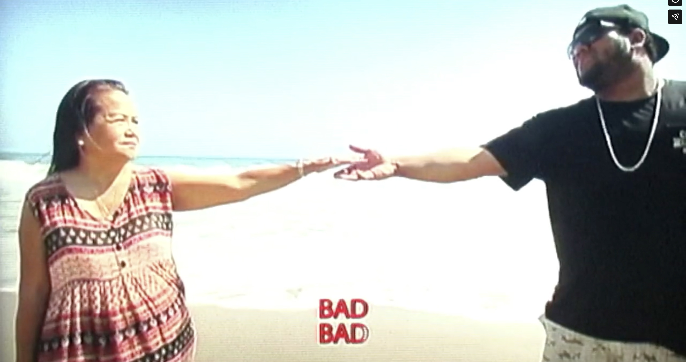
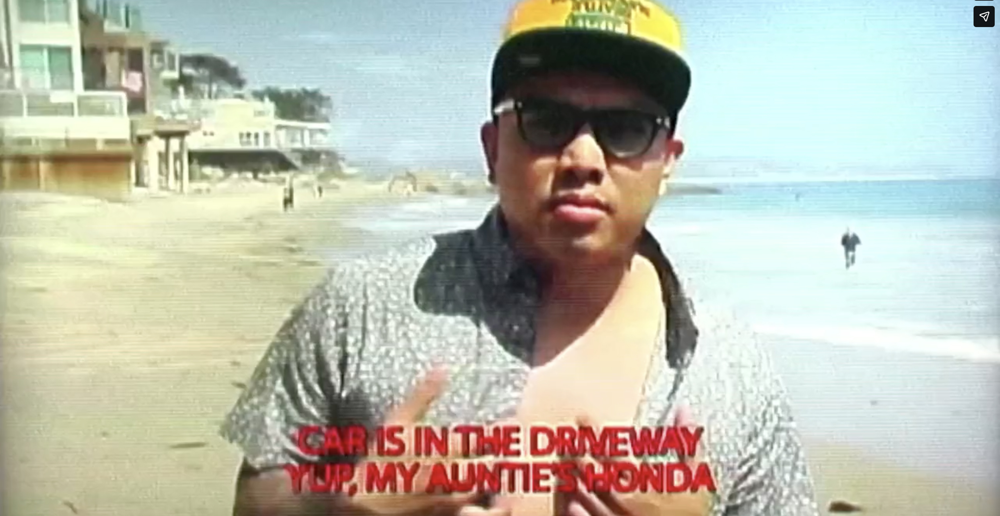

directed by Robert Farid Karimi
script co-written by Bambu DePistola and Robert Farid Karimi
A music video produced by Xylophone/Off The Boat productions I directed and co-wrote the script with Bambu DePistola. The idea was to make a karaoke video version of the song that their Aunty (defined by the Bar as someone who is your mom's friend that you had a crush on as young boy) was singing along to.

